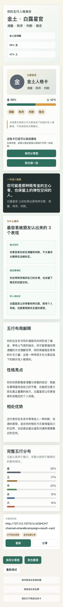
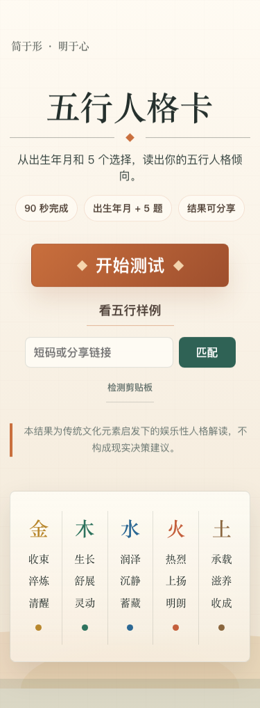
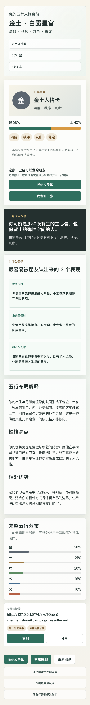
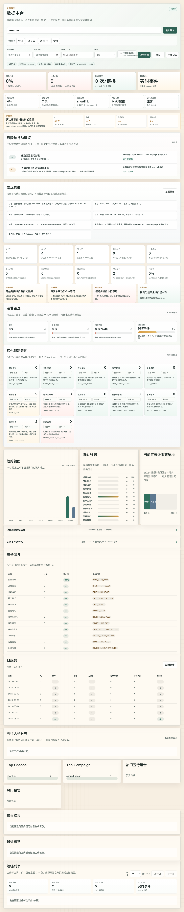

用户愿意开始
首页用“出生年月 + 5 道题 + 结果可分享”降低决策成本，首屏就能看到开始测试和样例人格卡。
Java 全栈作品 · 可分享 H5 · 短链增长闭环
90 秒生成一张可分享的人格卡：从匿名测算、结果生成、分享链接、朋友回流到后台 PV / UV / UIP， 把一个娱乐化 H5 做成可部署、可观测、可面试讲清楚的完整项目。

首页用“出生年月 + 5 道题 + 结果可分享”降低决策成本，首屏就能看到开始测试和样例人格卡。
测试页从长表单升级为逐题卡片流，年份支持快速选、精确调和手动输入，移动端操作更自然。
结果页前置身份名、关键词、主副五行比例和“最像你的 3 个表现”，让用户更容易觉得“像我”。
每个结果绑定短码，朋友访问 `/s/{shortCode}` 后回到结果页，后台能看到漏斗、来源和短链访问。
Showcase Screenshots



Backend Story
短链传播是峰值入口。当前设计让 `/s/{shortCode}` 优先走 Redis 短码映射， 命中时直接拿 resultId 做 302；访问事件只入有界队列，后台 worker 批量写库； 后台 overview 使用短缓存，避免运营刷新拖慢用户跳转。

5 分钟讲解主线